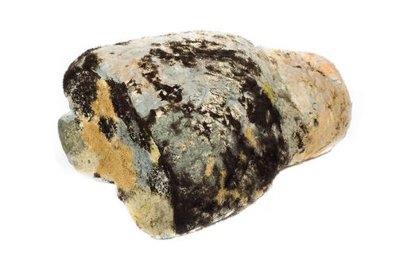
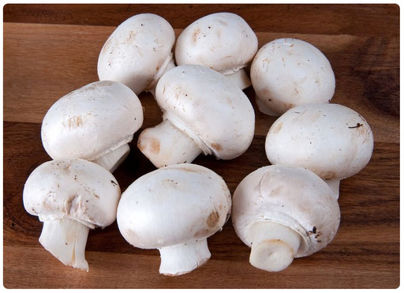
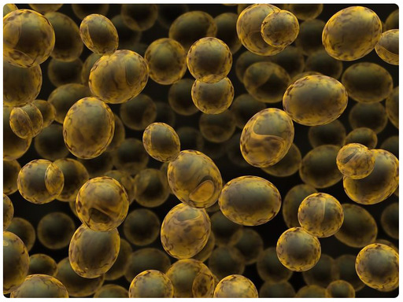

| Phylum | Description | Example |
|---|---|---|
| Zygomycota | mainly terrestrial, live in soil and compost and on foods such as bread |
black bread mold  |
| Basidiomycota | have many different shapes, considerable variation exists even within species |
button mushrooms  |
| Ascomycota | found in all terrestrial ecosystems worldwide, even in Antarctica, often involved in symbiotic relationships |
baker’s yeast  |